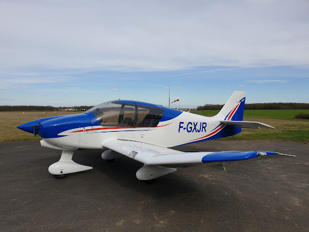

DR400-120

Masses:
Masse à vide: 620 Kg
Masse maximum: 1100 Kg
Capacités:
4 Passagers (pilote inclus)
3 heures 30 (vitesse de croisière à 200 km/h) de vol maximum sans arrêt à la pompe
Performances:
Décollage: ≈ 450m (Variable selon les conditions météorologiques, l'état de la piste et la masse totale de l'avion)
Atterrissage: ≈ 400m (Variable selon les conditions météorologiques, l'état de la piste et la masse totale de l'avion)
Vitesse maximale: 180 km/h
Vitesse de croisière: 200 km/h
Vitesse de décrochage: 80 km/h (plein volets)
"